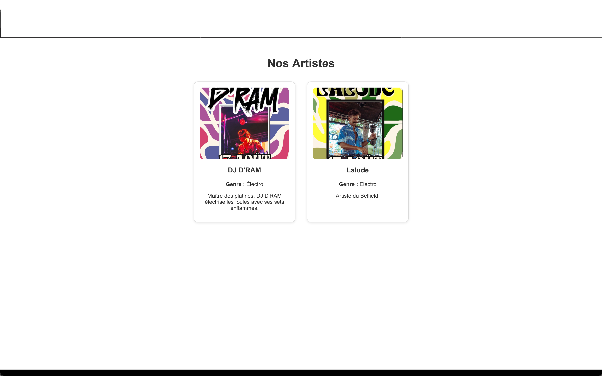
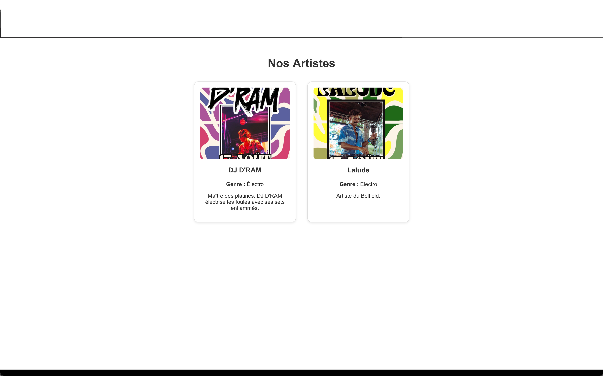

🎤 À propos du projet
Le site du Belfield Festival est la plateforme officielle du festival musical organisé par notre association à Belfield. Il permet aux visiteurs de consulter la programmation, découvrir les artistes, accéder aux informations pratiques et réserver leurs billets en ligne. Conçu pour refléter l’ambiance festive et professionnelle de l’événement, le site s’inspire des plus grands festivals européens.
✨ Fonctionnalités
- Consulter la programmation complète du festival
- Découvrir les artistes participants
- Réserver des billets en ligne
- Accéder aux informations pratiques (lieux, horaires, etc.)
- Galerie photo immersive
📸 Aperçu du site
 

👤 Réalisé par
Bouqetyb Noumane – Étudiant à Holberton School